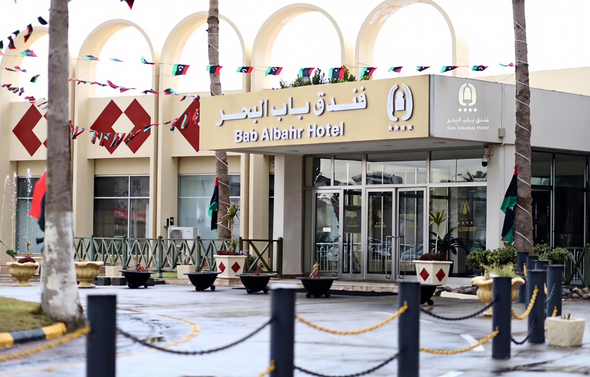
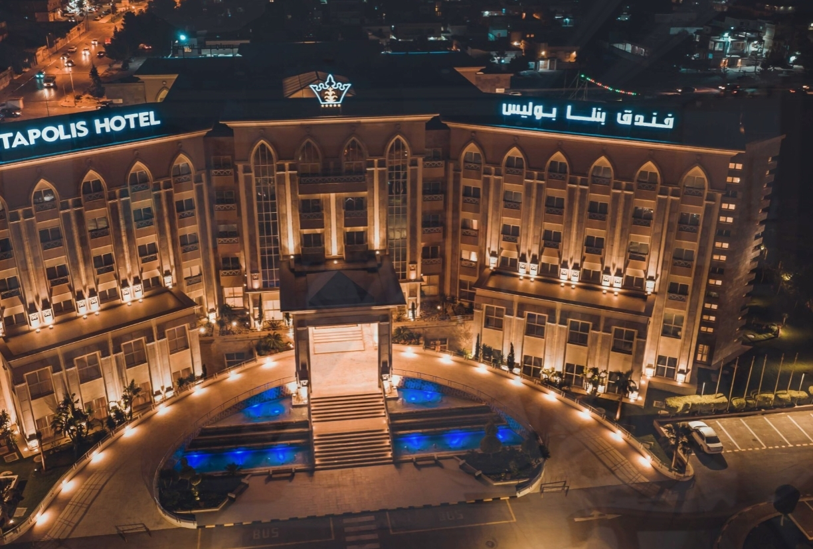

Best Hotels in Libya
A curated selection of the best hotels and resorts across Libya's cities.
A curated selection of the best hotels and resorts across Libya's cities.
A luxury 5-star hotel on Tripoli's corniche, with international restaurants, a spa, and a pool with a stunning sea view.
A historic luxury hotel in the heart of Tripoli, known for its elegant atmosphere, refined service, and central location.

A luxury 5-star hotel on the Mediterranean in Tripoli, offering superb sea views and world-class service.

One of the most established and luxurious hotels in eastern Libya, directly on the Benghazi corniche with a captivating sea view.

A hotel in Bayda with a wonderful view of the Green Mountain, mild climate and stunning natural surroundings.

A hotel with an authentic desert atmosphere in the heart of Ghadames — a unique stay close to the Old Town.

A modern 4-star hotel in Tripoli with a prime location and contemporary services, suited to business and leisure travellers alike.

A luxury hotel with a sea view in the heart of Benghazi, offering distinguished service close to the city's landmarks.

A modern hotel in Sabha on the road to Ubari — an ideal starting point for desert and dune excursions.